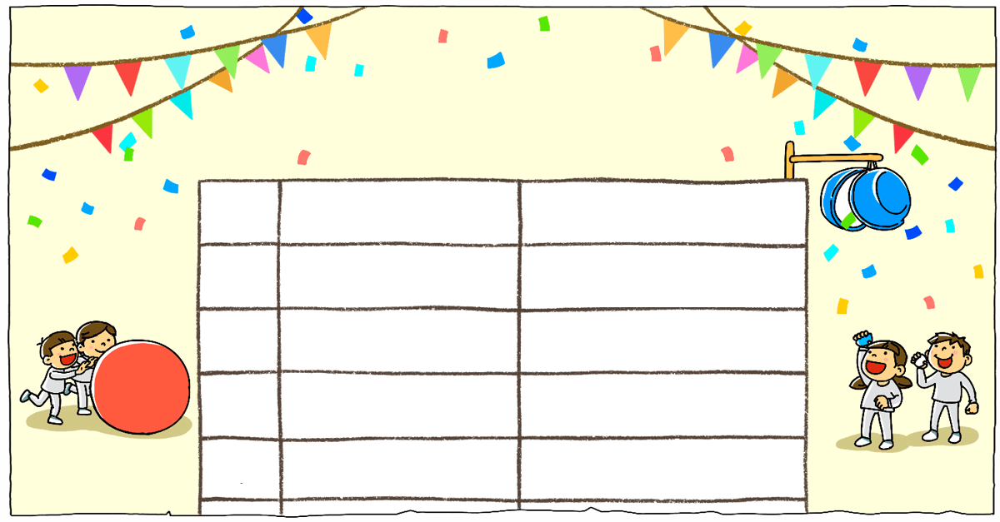

- 그림
- 물음 1
- 물음 2
- 물음 +
-
어울림 마당 일정표
순서 경기 시작 시각~끝나는 시각 1 단체 줄넘기 9 : 10 ~ 9 : 40 2 큰 공 굴리기 9 : 40 ~ 10 : 20 3 장애물 달리기 10 : 20 ~ 11 : 00 4 박 터뜨리기 11 : 00 ~ 11 : 45 -
단체 줄넘기 경기를 하는 데 걸리는 시간을 구해 보세요.
30분 -
단체 줄넘기 경기 전에 개회식을 20분 동안 했습니다. 개회식을 시작한 시각을 구해 보세요.
9시 10분 ＋ 20분 8시 50분 -
10분에서 20분을 뺄 수 없을 때는 어떻게 구할 수 있을까요?
시계의 긴바늘을 시계 반대 방향으로 돌려서 구합니다.9시 10분에서 10분 거꾸로 가면 9시이고 9시에서 다시 10분 거꾸로 가면 8시 50분입니다.9시 10분을 8시 70분으로 생각해서 8시 70분에서 20분을 빼면 8시 50분입니다.